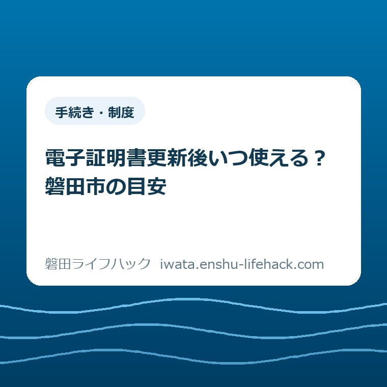
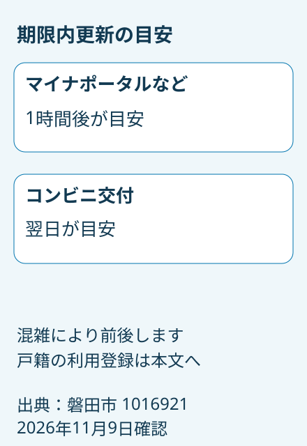
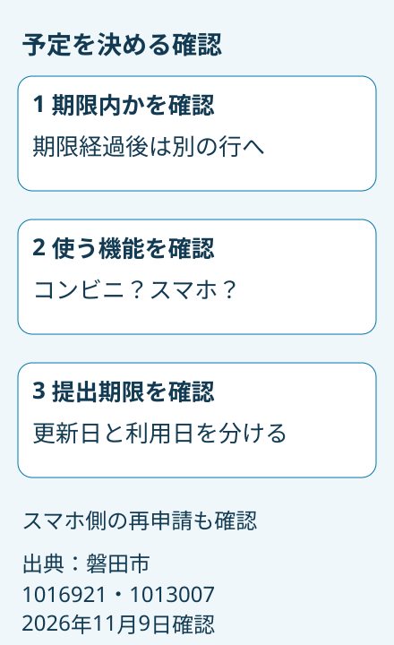

更新：2026.11.11 手続き・制度
電子証明書更新後いつ使える？磐田市の目安

この記事の要点
Q. 電子証明書を更新した帰りにコンビニで証明書を取れる？
A. 個別条件で変わります。有効期限内に電子証明書を更新した場合、磐田市の目安はマイナポータルなどが1時間後、コンビニ交付が翌日です。期限経過後は扱いが異なります。混雑で前後するため、更新当日の証明書取得を前提に予定を組まず、市公式の最新案内を確認してください。
窓口へ出向いた一日を無駄にしないために
電子証明書の更新後、いつサービスを使えるかは、更新前の有効期限や利用する機能によって変わります。窓口で手続きが終わっても、その場ですべての機能が使えるとは限りません。この記事は2026年11月9日に確認した磐田市の案内をもとに、更新の後に残る待ち時間を整理します。
仕事の休みを調整し、カードと通知書を探し、窓口へ出向く。それだけでも一つの用事です。親の付き添いや送迎があれば、家族の予定も動きます。必要な準備をして出かけた方が、帰りに証明書も取ろうと考えるのは自然です。更新後の待ち時間まで、最初から知っているとは限りません。
磐田市の公式ページ「マイナンバーカード手続き後に各サービスが利用可能になるまでの目安時間」は、2026年10月27日更新です。カードの交付、暗証番号の再設定、電子証明書の更新などを分け、使えるまでの時間を表で案内しています。本記事が答えるのは、電子証明書を更新した後の利用再開時期です。
窓口とコンビニの料金や取得方法を選ぶ話は、磐田市の証明書取得｜窓口とコンビニ比較で整理しています。今回は取得先を決めた後に、「更新したその日に使えるのか」を確かめるための記事です。利用料金の比較と、利用できる時刻の確認は別々に行います。
期限内更新の目安を読む
有効期限内に電子証明書を更新した場合、磐田市が示すコンビニ交付の利用再開は翌日が目安です。マイナポータル・公金受取口座登録は1時間後と案内されています。同じカードの同じ更新でも、利用する機能によって時間が違います。ここが、予定を組む際に見落としやすい部分です。
市公式表の「電子証明書の更新」の行には、有効期限内に更新した場合という条件が付いています。表を読む際は、まずこの条件を確かめ、その後に使いたいサービスの列を読みます。数字だけを覚えて、すべての更新が1時間後に使えると考えると、コンビニ交付の予定と食い違います。
たとえば、電子証明書を更新した帰りにコンビニで住民票を取得し、その日のうちに提出する予定を立てるとします。これは段取りを考えるための仮の例です。市の目安ではコンビニ交付は翌日なので、更新当日の店頭取得を前提にせず、当日に必要な場合の取得方法を市へ確認する必要があります。
「翌日」は市が示す目安であり、必ず何時に利用できるという保証ではありません。公式ページは、システムの混雑によって時間が前後する場合があると説明しています。翌日の朝一番に提出が必要な場合も、更新と取得の間に余裕があるかを確認してから予定を決めるほうが安心です。
マイナポータルの1時間後という案内も、すべての電子申請がその時間に完了するという意味ではありません。表が扱っているのは各サービスが利用可能になるまでの目安です。ログインできる状態と、申請が受理されること、証明書が発行されることを同じ時点として扱わないようにします。

期限経過後は別の行を見る
有効期限を過ぎてから電子証明書を更新した場合、磐田市の表では「電子証明書の新規発行」に区分されます。日常会話では同じ「更新」と呼んでいても、表の読み始める場所が変わります。期限内の行だけを見て、自分にもそのまま当てはまるとは判断できません。
期限経過後の更新について、マイナポータル・公金受取口座登録の欄は、マイナポータルの利用者登録済みの場合に1時間後としています。注1では、利用者未登録の場合は最大翌々日から利用可能となることがあると案内しています。自分の登録状況を含めて確かめる必要があります。
コンビニ交付の欄は、新規発行の行でも翌日が目安です。ただし、表の注2では、戸籍証明書のコンビニ交付利用登録申請をしている方は、改めて利用登録申請が必要とされています。「翌日になったから、以前の利用登録もすべてそのまま」とは読み取れません。
戸籍証明書を取りたい方は、必要な証明書の名前と、以前に利用登録をしたかを確認して相談します。ここでは戸籍の登録完了までの追加日数を断定しません。翌日という時間の目安と、改めて行う登録手続きは別の条件なので、両方を満たす必要があるかを市公式で確かめてください。
期限が切れていることに気づくと、手続きが遅れた自分を責めてしまうかもしれません。ただ、ここで役に立つのは、過ぎた日を数えることより、今どの行に当てはまるかを整理することです。私は、期限経過後の方には、必要なサービスと提出日を先にメモする進め方がよいと考えます。
市公式の表には健康保険証利用登録の列もありますが、登録済みカードの医療機関での利用については「その他」に別の説明があります。証明書取得の予定と受診予定を同じ目安で判断しないでください。受診を控えている場合は、市公式の該当説明と登録状況を確かめ、個別に確認します。
更新の種類とスマホ側の手続きを分ける
マイナンバーカード本体の更新と、カードに入っている電子証明書の更新は別の手続きです。磐田市公式「マイナンバーカード・電子証明書の更新」は、通知書が届いたら必要な手続きを確認するよう案内しています。封筒を開けたら、まず何の更新が必要なのかを読み分けます。
市の案内では、電子証明書の有効期限は発行日から5回目の誕生日までです。有効期限欄に記入がない場合、マイナポータルにログインして期限を確認する方法も掲載されています。カード本体に見える期限だけで判断せず、電子証明書の期限を確認できる資料を探します。
磐田市公式ページは、2026年11月9日の確認時点で、カード・電子証明書の更新申請は予約不要と案内しています。更新手数料は無料です。ただし、予約不要という案内は、窓口の待ち時間がないことや、更新後すぐに各サービスを使えることを保証するものではありません。
本人による電子証明書更新の持ち物は、マイナンバーカードと、有効期限通知書を持っている場合はその通知書です。原則として本人が来庁する案内で、代理人の場合には別の書類や条件があります。家族が代わりに行く場合は、本人来庁の持ち物だけで済むと判断しないでください。
電子証明書の更新受付窓口として、市は国府台の本庁舎1階市民課と、福田・竜洋・豊岡の各支所を掲載しています。豊田支所も同じ取り扱いだと推測しないようにします。支所の役割の整理には、磐田市の4支所窓口でできることも参考になりますが、来庁前には最新の市公式案内を確認します。
スマホ用電子証明書を使っている方には、さらに別の確認が残ります。市公式の「その他」では、カードの再交付や電子証明書の更新・新規発行をした場合、スマホ電子証明書も再度利用申請が必要としています。カード側の手続きを終えただけで、スマホ側も完了したと考えないようにします。
スマホで申請する予定がある場合は、使う端末の準備と、本人確認に使う機能の確認を分けます。電子申請にも郵送など後続の工程がある例は、磐田市の原付ナンバー電子申請で扱っています。画面を開けることと、手元に必要な物が届くことは、それぞれ別の節目です。

良い点：使えるまでの時間を見通せる
磐田市の目安表の良い点は、更新の種類とサービスを一つの表で照合できることです。電子証明書の更新と、暗証番号の再設定を分けているため、同じ窓口で行う用事でも、その後の時間が違うことを確認できます。表の行と列を合わせれば、問い合わせる前に条件を整理できます。
私は、待ち時間の目安が公表されていることを評価します。使えるまで時間がかかると分かれば、店頭で何度も試す前に予定を組み直せます。使えない理由を本人の操作ミスだけに結び付けず、反映待ちという可能性を確かめられる点も、利用者の負担を減らす材料になります。
もう一つの良い点は、注記に条件を残していることです。期限経過後のマイナポータル利用者登録や、戸籍証明書の再登録、スマホ側の再申請まで読むと、単純に「翌日」とだけ伝える案内より、自分の状況に合わせて考えられます。表の大きな数字だけでなく、注記も予定を決める情報です。
私は、更新手数料が無料であることと、利用者の負担がないことは別だと考えます。交通費や休みの調整、家族への連絡は残ります。だからこそ、再来庁や店頭でのやり直しを減らす情報が役に立ちます。手続きを済ませた方の時間を、予定に入れてよい待ち時間へ翻訳することに意味があります。
注文したい点：完了後の段取りも一緒に知りたい
更新後の案内で私が注文したいのは、「手続きが終わった」と「使える状態になった」を、利用者が一度で区別できる伝え方です。これは特定の窓口で説明が不足していたという体験報告ではありません。公式表を読む立場からの意見であり、職員個人への評価でもありません。
私は、更新後に使いたいサービス名と目安の時期が、手元に残る形で結び付くと助かると考えます。たとえばコンビニ交付を使う予定なら、翌日という目安と戸籍の注記を一緒に確認できる案内です。複数の予定を抱えて来た方が、帰宅後に記憶だけで判断せずに済むからです。
ただ、案内を長くすれば読みやすくなるとも限りません。私は、細かな条件をどこまで一枚に入れるべきか迷います。文字を詰めれば、かえって必要な一行を見失います。まず使いたいサービスを一つ決め、その条件に合う説明へ進める形が、利用する側にも案内する側にも扱いやすいと考えます。
公式の表はあくまで目安であり、個々の利用再開時刻を証明するものではありません。私は、記事側で時刻を強く言い切り、市の案内以上の約束を作ることも避けたいと思います。目安と例外を並べ、予定が詰まっている場合には確認が必要だと分かる形を目指します。
対案・結論：提出期限を一つ確認する
電子証明書更新後の予定を決めるために、今日できる一歩は、必要な証明書や申請の提出期限を一つ確認することです。「近いうちに必要」ではなく、提出先が求める日をカレンダーに残します。更新後の利用再開が目安どおりでも間に合うかを考える、出発点になります。
提出日が分かったら、更新した日、電子証明書が期限内だったか、使いたいサービス名を一緒に整理します。窓口へ相談する際は「更新後に使えません」だけでなく、「期限内に更新し、コンビニ交付で住民票を取りたい」と伝える形です。相談内容を絞れば、公式表のどこを見るかも明確になります。
当日に証明書が必要な場合、この記事から「コンビニで取れないから提出も不可能」とは判断できません。窓口取得などの可否や必要書類は、証明書の種類と本人・代理人の条件で変わります。提出先にも必要な書類と期限を確かめ、市には当日に選べる取得方法があるかを確認します。
すでに更新を済ませた方は、同じ手続きを最初からやり直す前に、自分の条件と利用時期を照らし合わせます。目安を過ぎても使えない場合には、表示された内容を控えて市へ相談します。暗証番号などの秘密情報を第三者に渡したり、この記事へ書き込んだりする必要はありません。
今ここで、すべてのサービスの予定を決める必要はありません。まず一つの提出期限が分かれば、更新日と利用日を分けるべきかが見えてきます。目安の時間を待つことと、必要な条件を確認せず待ち続けることは違います。期限が迫るときほど、自分が使いたい機能を具体的に伝えます。
大石の視点：終わった手続きと使える状態
大石浩之（磐田市／不動産業）です。私は、段取りは窓口で用事を済ませた時点ではなく、必要な提出物を用意できるところまで見て組むものだと考えます。これは私の判断であり、特定のお客様や自分の更新体験を語ったものではありません。今回使える体験素材がないため、経験談を補ってはいません。
不動産の手続きでも、書類を取りに行く日と、提出先が受け取る日は分けて考えたいところです。電子証明書の更新に費やした時間を認めたうえで、その後に残る条件を一つずつほどく。私は、「一回で全部済ませる」ことより、二度手間になりそうな箇所を先に見つける案内を選びます。
期限内更新ならコンビニ交付は翌日が目安、期限経過後やスマホ利用には別の確認がある。この区別を持ち帰れれば、今日の準備は前に進みます。制度や利用条件は個別事情と時点で変わります。最後は磐田市公式の目安表と更新案内を開き、分からない条件は市民課へ確認してください。
よくある質問
更新した当日にコンビニで住民票を取れますか？
有効期限内に電子証明書を更新した場合も、磐田市の目安ではコンビニ交付は翌日です。更新当日の取得を前提に予定を組まないようにします。システムの混雑で前後する場合もあります。当日に必要なら、証明書の種類と提出期限を伝え、市へ取得方法を確認してください。
有効期限を過ぎてから更新しても1時間後ですか？
期限経過後の更新は、市の表では電子証明書の新規発行に当たります。マイナポータルは利用者登録済みなら1時間後が目安ですが、未登録なら最大翌々日となる場合があります。コンビニ交付は翌日が目安です。どのサービスかを分けて、注記も確認してください。
更新後、スマホ用電子証明書もそのまま使えますか？
磐田市は、カードの再交付や電子証明書の更新・新規発行をした場合、スマホ電子証明書も再度利用申請が必要と案内しています。カード側の手続きだけでスマホ側も完了したとは判断できません。実際に利用する端末とサービスについて、最新の公式案内を確認してください。
参考にした公式情報
- マイナンバーカード手続き後に各サービスが利用可能になるまでの目安時間／磐田市（2026年11月9日確認）
- マイナンバーカード・電子証明書の更新／磐田市（2026年11月9日確認）
最終確認日：2026-11-09 ／ 本記事は公表情報と執筆者の見解を分けて記載しています。制度・数値・公開状況は変更される場合があるため、最新情報は磐田市公式ページでご確認ください。